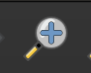

3. Leveraging Attributes to Make Maps
As a class…
- Visit MassGIS Data: Bicycle Trails , and read through the page. Discuss any observations you make about how this data is structured and presented.
- Select
Download this data - Uncompress
biketrails_arc.zip - In the QGIS main menu at the top of the screen, navigate to
Projectand then clickNew - If you are prompted to save your work, you don’t have to, we won’t need it for anything else later
- In the
Browser pane, underXYZ Tiles, double clickOpenStreetMap. Only do this once, it may take a moment to show up in the map screen - Use the Zoom button in the menu bar across the top of the screen to draw a square around Massachusetts/Boston area. 
- Add the bicycle data by clicking on the file which ends in the extension .shp, and dragging that file (
BIKETRAILS_ARC.shp) onto the map in the QGIS document - Click
OKthrough the warning that tells us this data is in a different projection - Right now, the bike lane lines are all the same color. We are going to leverage the properties inside the data to symbolize the shapes by category. Let’s look at the attributes. Right click on the bike layer in the
Layer pane, and selectOpen Attribute TableNote the fieldFAC_TYPE_N, which the documentation on the website tells us means
Type of bike facility: shared use path, bike lane, separated bike lane, or bicycle/pedestrian priority roadway
- Close out of the attribute table, and double click on the bike layer to open the
Layer properties - Navigate to the menu properties option Symbology
- Click where it says
Single Symboland change it toCategorized - Using the drop-down arrow next to
Value, select the fieldFAC_TYPE_N - Towards the bottom of the screen, select
Classify - Where it says Symbol at the top of the screen, and has a long, colorful line, click on the line!
- Under
Line, click where it saysSimple Line - Under
Stroke Width, change it to1.0 - Click
OKandOK - Zoom in to Boston area to investigate the new symbology
- Discuss, can you think of any other applications of using categories in the data to power symbolization?